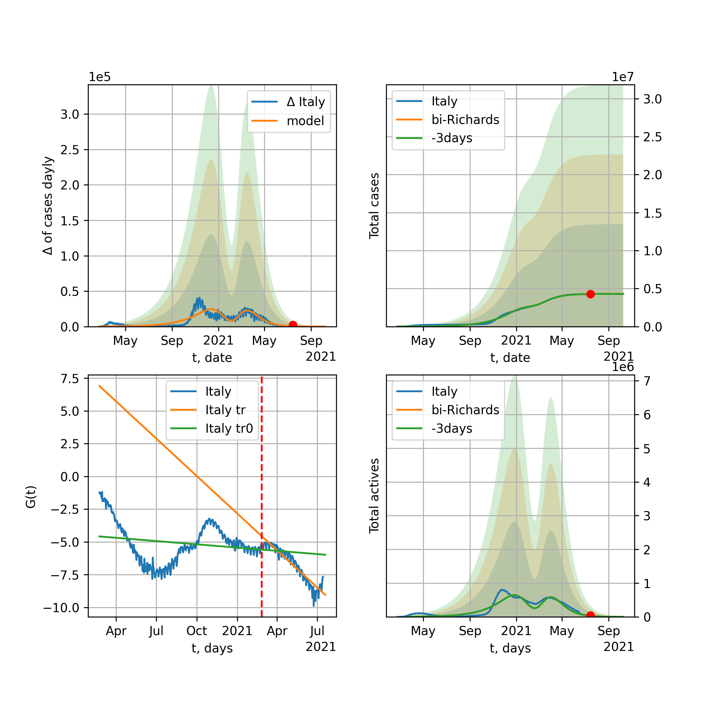
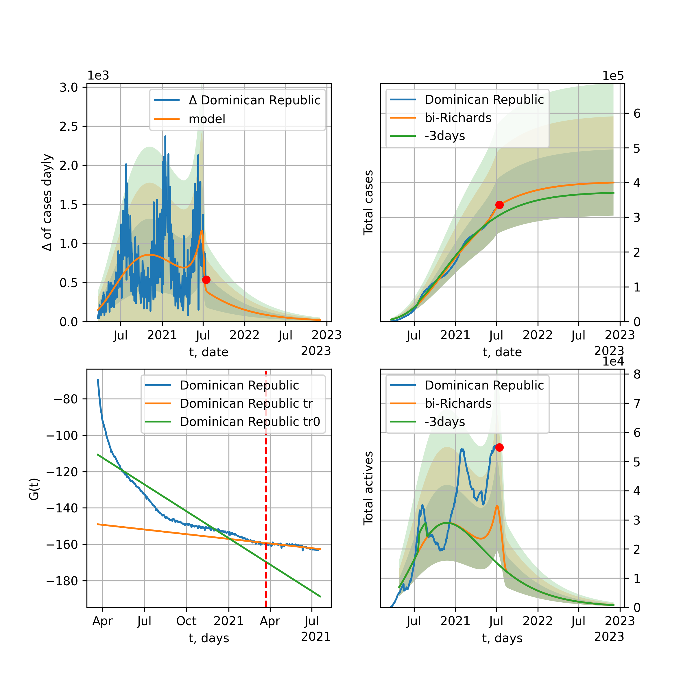

Multi-logistic model of COVID-19 dynamics
Model, code, results
Project maintained by algmaknick Hosted on GitHub Pages — Theme by mattgraham
World

World data at: 2020-05-19
+3 day model MAPE: 0.018916
model: bi-Richards
coeffs: [ 6.45196695e+06 3.46500833e+00 -3.49161958e+01 1.10490727e-02]
S.Korea scenario coeffs: [0.36242246, 2.56241634, 1.84890887, 0.13324732]
rational stdev: 0.244473
forecast at the end of period: +488 days
deltaDaycases: 3215
total cases: 8870833 ± 2168680
total death: 578024 ± 423933
bi-Richards approximation splitting point: 55
trend coefficient of determination: 0.357326
intercept: -1.912451
slope: -0.041550
trend coefficient of determination: 0.935930
intercept: -0.495315
slope: -0.033339
European Union

European Union data at: 2020-05-19
+3 day model MAPE: 0.010526
model: logisticQ
coeffs: [ 1.11015693e+06 6.23114098e-07 5.02117057e+01 -1.78601425e+05]
S.Korea scenario coeffs: [0.35416971, 0.02606324, 4.35859408, 19.30413219]
rational stdev: 0.427882
forecast at the end of period: +263 days
deltaDaycases: 10
total cases: 1503159 ± 643175
total death: 160157 ± 205585
trend coefficient of determination: 0.988955
intercept_: -3.06794608862924
coeffs_: [ 0. -0.32385643 0.00163184]
USA

USA data at: 2020-05-19
+3 day model MAPE: 0.010411
model: Richards
coeffs: [ 1.91997278e+06 4.27607770e+00 -5.44746835e+01 1.11985954e-02]
S.Korea scenario coeffs: [0.36242246, 2.56241634, 1.84890887, 0.13324732]
rational stdev: 0.320049
forecast at the end of period: +340 days
deltaDaycases: 1527
total cases: 2515426 ± 805059
total death: 149801 ± 143830
trend coefficient of determination: 0.951649
intercept: -1.004002
slope: -0.046211
Spain

Spain data at: 2020-05-19
+3 day model MAPE: 0.006573
model: Richards
coeffs: [ 2.88837819e+05 7.09961358e+00 -4.62231602e+01 8.89638238e-03]
S.Korea scenario coeffs: [0.36242246, 2.56241634, 1.84890887, 0.13324732]
rational stdev: 0.218403
forecast at the end of period: +298 days
deltaDaycases: 93
total cases: 389124 ± 84986
total death: 38769 ± 25401
trend coefficient of determination: 0.947583
intercept: -0.765336
slope: -0.059674
Italy

Italy data at: 2020-05-19
+3 day model MAPE: 0.001567
model: Richards
coeffs: [ 2.35282065e+05 6.11620668e+00 -5.06592049e+01 9.86487652e-03]
S.Korea scenario coeffs: [0.36242246, 2.56241634, 1.84890887, 0.13324732]
rational stdev: 0.070331
forecast at the end of period: +270 days
deltaDaycases: 138
total cases: 313599 ± 22055
total death: 44500 ± 9389
trend coefficient of determination: 0.983156
intercept: -1.078017
slope: -0.057344
United Kingdom

United Kingdom data at: 2020-05-19
+3 day model MAPE: 0.005279
model: Richards
coeffs: [ 3.12122193e+05 3.65723953e+00 -5.74767165e+01 1.31390895e-02]
S.Korea scenario coeffs: [0.36242246, 2.56241634, 1.84890887, 0.13324732]
rational stdev: 0.119649
forecast at the end of period: +368 days
deltaDaycases: 145
total cases: 416043 ± 49779
total death: 59092 ± 21210
trend coefficient of determination: 0.950148
intercept: -1.392797
slope: -0.045719
France

France data at: 2020-05-19
+3 day model MAPE: 0.004122
model: Richards
coeffs: [1.79121405e+05 3.12415526e-01 1.99943936e+01 3.30817787e-01]
S.Korea scenario coeffs: [0.36242246, 2.56241634, 1.84890887, 0.13324732]
rational stdev: 0.201532
forecast at the end of period: +130 days
deltaDaycases: 127
total cases: 240370 ± 48442
total death: 37252 ± 22522
trend coefficient of determination: 0.948018
intercept: -2.733525
slope: -0.095686
Germany

Germany data at: 2020-05-19
+3 day model MAPE: 0.004316
model: Richards
coeffs: [ 1.77013067e+05 8.20136485e+00 -3.86032579e+01 1.01177171e-02]
S.Korea scenario coeffs: [0.36242246, 2.56241634, 1.84890887, 0.13324732]
rational stdev: 0.655294
forecast at the end of period: +200 days
deltaDaycases: 89
total cases: 237982 ± 155948
total death: 10964 ± 21553
trend coefficient of determination: 0.956732
intercept: -1.160199
slope: -0.068320
Turkey

Turkey data at: 2020-05-19
+3 day model MAPE: 0.008131
model: Richards
coeffs: [ 1.59122846e+05 5.63415255e+00 -3.26284884e+01 1.31881737e-02]
S.Korea scenario coeffs: [0.36242246, 2.56241634, 1.84890887, 0.13324732]
rational stdev: 0.218142
forecast at the end of period: +196 days
deltaDaycases: 219
total cases: 207441 ± 45251
total death: 5745 ± 3759
trend coefficient of determination: 0.745933
intercept: -0.982606
slope: -0.058598
Russia

Russia data at: 2020-05-19
+3 day model MAPE: 0.009867
model: logisticQ
coeffs: [ 3.91038286e+05 4.31914215e-06 6.16003729e+01 -2.58184691e+04]
S.Korea scenario coeffs: [0.35416971, 0.02606324, 4.35859408, 19.30413219]
rational stdev: 0.412636
forecast at the end of period: +284 days
deltaDaycases: 57
total cases: 528521 ± 218087
total death: 4999 ± 6188
trend coefficient of determination: 0.967011
intercept_: -3.5008194071555296
coeffs_: [ 0. -0.22317357 0.00077166]
Iran

Iran data at: 2020-05-19
+3 day model MAPE: 0.013006
model: bi-Richards
coeffs: [5.06311522e+04 4.69148427e+00 3.66686899e+01 1.96877316e-02]
S.Korea scenario coeffs: [0.36242246, 2.56241634, 1.84890887, 0.13324732]
rational stdev: 0.312331
forecast at the end of period: +312 days
deltaDaycases: 7
total cases: 171222 ± 53478
total death: 9782 ± 9165
bi-Richards approximation splitting point: 75
trend coefficient of determination: 0.949208
intercept: -0.964585
slope: -0.055914
trend coefficient of determination: 0.291258
intercept: -5.519506
slope: 0.013592
Brazil

Brazil data at: 2020-05-19
+3 day model MAPE: 0.016513
model: logisticQ
coeffs: [ 6.65509269e+05 8.09314263e-06 7.48120054e+01 -1.00092405e+04]
S.Korea scenario coeffs: [0.35416971, 0.02606324, 4.35859408, 19.30413219]
rational stdev: 0.400797
forecast at the end of period: +333 days
deltaDaycases: 389
total cases: 891450 ± 357290
total death: 58962 ± 70895
trend coefficient of determination: 0.878411
intercept_: -4.157231686786515
coeffs_: [ 0. -0.28401925 0.00186484]
Canada

Canada data at: 2020-05-19
+3 day model MAPE: 0.000132
model: Richards
coeffs: [ 1.06155434e+05 2.52735410e+00 -6.17461173e+01 1.74159418e-02]
S.Korea scenario coeffs: [0.36242246, 2.56241634, 1.84890887, 0.13324732]
rational stdev: 0.176525
forecast at the end of period: +420 days
deltaDaycases: 32
total cases: 142431 ± 25142
total death: 10643 ± 5636
trend coefficient of determination: 0.954983
intercept: -1.557178
slope: -0.046882
Belgium

Belgium data at: 2020-05-19
+3 day model MAPE: 0.002237
model: Richards
coeffs: [ 5.82453313e+04 9.63957183e-01 -1.21326306e+01 7.47134935e-02]
S.Korea scenario coeffs: [0.36242246, 2.56241634, 1.84890887, 0.13324732]
rational stdev: 0.431663
forecast at the end of period: +200 days
deltaDaycases: 40
total cases: 77664 ± 33524
total death: 12678 ± 16417
trend coefficient of determination: 0.947805
intercept: -1.615232
slope: -0.064037
Peru

Peru data at: 2020-05-19
+3 day model MAPE: 0.035123
model: logisticQ
coeffs: [ 1.37951688e+05 3.24729657e-06 5.62923862e+01 -3.06943289e+04]
S.Korea scenario coeffs: [0.35416971, 0.02606324, 4.35859408, 19.30413219]
rational stdev: 0.372245
forecast at the end of period: +242 days
deltaDaycases: 104
total cases: 184689 ± 68749
total death: 5409 ± 6040
trend coefficient of determination: 0.973480
intercept_: -3.742385178907379
coeffs_: [ 0. -0.27599842 0.00176054]
Netherlands

Netherlands data at: 2020-05-19
+3 day model MAPE: 0.000468
model: Richards
coeffs: [4.61062873e+04 4.45018465e-01 4.08249992e+00 1.66019199e-01]
S.Korea scenario coeffs: [0.36242246, 2.56241634, 1.84890887, 0.13324732]
rational stdev: 0.166229
forecast at the end of period: +200 days
deltaDaycases: 23
total cases: 61886 ± 10287
total death: 7992 ± 3985
trend coefficient of determination: 0.979012
intercept: -1.707200
slope: -0.075424
India

India data at: 2020-05-19
+3 day model MAPE: 0.010049
model: Richards
coeffs: [ 1.25005419e+06 6.41171625e-01 -5.66267470e+01 3.07669573e-02]
S.Korea scenario coeffs: [0.36242246, 2.56241634, 1.84890887, 0.13324732]
rational stdev: 0.341145
forecast at the end of period: +928 days
deltaDaycases: 379
total cases: 1642688 ± 560394
total death: 50943 ± 52136
trend coefficient of determination: 0.495449
intercept: -1.739530
slope: -0.021757
Switzerland

Switzerland data at: 2020-05-19
+3 day model MAPE: 0.003378
model: logisticQ
coeffs: [ 2.98602300e+04 7.34295087e-07 2.58285009e+01 -1.99124018e+05]
S.Korea scenario coeffs: [0.35416971, 0.02606324, 4.35859408, 19.30413219]
rational stdev: 0.345700
forecast at the end of period: +88 days
deltaDaycases: 17
total cases: 40200 ± 13897
total death: 2482 ± 2574
trend coefficient of determination: 0.983127
intercept_: -3.8025907800055965
coeffs_: [ 0. -0.31745036 0.00192253]
Ecuador

Ecuador data at: 2020-05-19
+3 day model MAPE: 0.003226
model: Richards
coeffs: [ 6.48533972e+04 1.29080962e+00 -7.23399710e+01 2.40717051e-02]
S.Korea scenario coeffs: [0.36242246, 2.56241634, 1.84890887, 0.13324732]
rational stdev: 0.321128
forecast at the end of period: +648 days
deltaDaycases: 9
total cases: 87427 ± 28075
total death: 7267 ± 7000
trend coefficient of determination: 0.206998
intercept: -1.992629
slope: -0.045822
Portugal

Portugal data at: 2020-05-19
+3 day model MAPE: 0.008032
model: Richards
coeffs: [ 3.02412464e+04 6.02400568e+00 -3.93263322e+01 1.12816357e-02]
S.Korea scenario coeffs: [0.36242246, 2.56241634, 1.84890887, 0.13324732]
rational stdev: 0.184498
forecast at the end of period: +228 days
deltaDaycases: 27
total cases: 39940 ± 7368
total death: 1692 ± 936
trend coefficient of determination: 0.902170
intercept: -0.823524
slope: -0.060830
Saudi Arabia

Saudi Arabia data at: 2020-05-19
+3 day model MAPE: 0.040386
model: Richards
coeffs: [ 2.37151450e+05 6.54703406e-01 -2.56580568e+01 4.44042060e-02]
S.Korea scenario coeffs: [0.36242246, 2.56241634, 1.84890887, 0.13324732]
rational stdev: 0.329331
forecast at the end of period: +676 days
deltaDaycases: 52
total cases: 317705 ± 104630
total death: 1746 ± 1725
trend coefficient of determination: 0.085232
intercept: -2.284764
slope: -0.015958
Sweden

Sweden data at: 2020-05-19
+3 day model MAPE: 0.003635
model: Richards
coeffs: [ 4.57026497e+04 1.70145621e+00 -5.65020090e+01 2.11770081e-02]
S.Korea scenario coeffs: [0.36242246, 2.56241634, 1.84890887, 0.13324732]
rational stdev: 0.267514
forecast at the end of period: +438 days
deltaDaycases: 30
total cases: 59596 ± 15942
total death: 7242 ± 5812
trend coefficient of determination: 0.834953
intercept: -1.373990
slope: -0.038574
Pakistan

Pakistan data at: 2020-05-19
+3 day model MAPE: 0.026908
model: Richards
coeffs: [2.04718813e+05 1.10193859e-01 5.94554229e+01 3.10292651e-01]
S.Korea scenario coeffs: [0.36242246, 2.56241634, 1.84890887, 0.13324732]
rational stdev: 0.400768
forecast at the end of period: +1208 days
deltaDaycases: 0
total cases: 278911 ± 111778
total death: 5956 ± 7160
trend coefficient of determination: 0.746578
intercept: -2.892955
slope: -0.049543
Ireland

Ireland data at: 2020-05-19
+3 day model MAPE: 0.006939
model: logisticQ
coeffs: [ 2.40656513e+04 2.42358132e-06 3.52033803e+01 -5.26075801e+04]
S.Korea scenario coeffs: [0.35416971, 0.02606324, 4.35859408, 19.30413219]
rational stdev: 0.321719
forecast at the end of period: +130 days
deltaDaycases: 27
total cases: 32154 ± 10344
total death: 2069 ± 1996
trend coefficient of determination: 0.981114
intercept_: -3.807932608743174
coeffs_: [ 0. -0.27263493 0.00158496]
Mexico

Mexico data at: 2020-05-19
+3 day model MAPE: 0.007406
model: Richards
coeffs: [ 3.32539249e+05 5.04873120e-01 -4.01500807e+01 4.96294432e-02]
S.Korea scenario coeffs: [0.36242246, 2.56241634, 1.84890887, 0.13324732]
rational stdev: 0.125800
forecast at the end of period: +788 days
deltaDaycases: 58
total cases: 446085 ± 56117
total death: 46507 ± 17551
trend coefficient of determination: 0.862885
intercept: -2.013684
slope: -0.028800
Singapore

Singapore data at: 2020-05-19
+3 day model MAPE: 0.019981
model: bi-Richards
coeffs: [2.14378281e+04 9.03848479e+00 3.11281570e+01 9.82799721e-03]
S.Korea scenario coeffs: [0.36242246, 2.56241634, 1.84890887, 0.13324732]
rational stdev: 0.276490
forecast at the end of period: +228 days
deltaDaycases: 32
total cases: 37368 ± 10331
total death: 28 ± 23
bi-Richards approximation splitting point: 60
trend coefficient of determination: 0.126480
intercept: -2.323665
slope: -0.021742
trend coefficient of determination: 0.469129
intercept: -0.611205
slope: -0.026803
Chile

Chile data at: 2020-05-19
+3 day model MAPE: 0.013108
model: bi-Richards
coeffs: [ 1.86116641e+05 1.62966563e+00 -1.41397697e+01 2.83009324e-02]
S.Korea scenario coeffs: [0.36242246, 2.56241634, 1.84890887, 0.13324732]
rational stdev: 0.019777
forecast at the end of period: +473 days
deltaDaycases: 46
total cases: 267060 ± 5281
total death: 2741 ± 162
bi-Richards approximation splitting point: 40
trend coefficient of determination: 0.830186
intercept: -2.049925
slope: -0.044582
trend coefficient of determination: 0.006369
intercept: -3.026963
slope: -0.002755
Israel

Israel data at: 2020-05-19
+3 day model MAPE: 0.002258
model: Richards
coeffs: [ 1.70764374e+04 6.39685696e+00 -3.68947478e+01 1.37975191e-02]
S.Korea scenario coeffs: [0.36242246, 2.56241634, 1.84890887, 0.13324732]
rational stdev: 0.154316
forecast at the end of period: +200 days
deltaDaycases: 5
total cases: 23092 ± 3563
total death: 385 ± 178
trend coefficient of determination: 0.919969
intercept: -1.039100
slope: -0.091433
Austria

Austria data at: 2020-05-19
+3 day model MAPE: 0.005614
model: logisticQ
coeffs: [ 1.54782975e+04 8.61868647e-07 2.36556113e+01 -2.19313824e+05]
S.Korea scenario coeffs: [0.35416971, 0.02606324, 4.35859408, 19.30413219]
rational stdev: 0.323323
forecast at the end of period: +74 days
deltaDaycases: 6
total cases: 20891 ± 6754
total death: 808 ± 783
trend coefficient of determination: 0.980896
intercept_: -2.7496743400338524
coeffs_: [ 0. -0.35776502 0.00246711]
Belarus

Belarus data at: 2020-05-19
+3 day model MAPE: 0.008178
model: Richards
coeffs: [ 5.71483985e+04 1.69111734e+00 -4.89939866e+01 2.70075439e-02]
S.Korea scenario coeffs: [0.36242246, 2.56241634, 1.84890887, 0.13324732]
rational stdev: 0.140495
forecast at the end of period: +368 days
deltaDaycases: 33
total cases: 75612 ± 10623
total death: 419 ± 176
trend coefficient of determination: 0.858927
intercept: -1.705274
slope: -0.045042
Japan

Japan data at: 2020-05-19
+3 day model MAPE: 0.005995
model: Richards
coeffs: [1.62679394e+04 1.07518360e-01 7.80804516e+01 1.30561162e+00]
S.Korea scenario coeffs: [0.36242246, 2.56241634, 1.84890887, 0.13324732]
rational stdev: 0.849441
forecast at the end of period: +158 days
deltaDaycases: 4
total cases: 22074 ± 18750
total death: 1035 ± 2637
trend coefficient of determination: 0.774285
intercept: -6.484005
slope: -0.101999
Qatar

Qatar data at: 2020-05-19
+3 day model MAPE: 0.019711
model: Richards
coeffs: [ 2.43860509e+05 6.61419998e-01 -6.74688227e+01 3.50883509e-02]
S.Korea scenario coeffs: [0.36242246, 2.56241634, 1.84890887, 0.13324732]
rational stdev: 0.086417
forecast at the end of period: +942 days
deltaDaycases: 21
total cases: 329506 ± 28475
total death: 138 ± 35
trend coefficient of determination: 0.122193
intercept: -2.754906
slope: -0.010350
Poland

Poland data at: 2020-05-19
+3 day model MAPE: 0.019455
model: Richards
coeffs: [ 2.47140192e+04 4.10908898e+00 -6.83666565e+01 1.03998530e-02]
S.Korea scenario coeffs: [0.36242246, 2.56241634, 1.84890887, 0.13324732]
rational stdev: 0.292462
forecast at the end of period: +410 days
deltaDaycases: 12
total cases: 32764 ± 9582
total death: 1612 ± 1414
trend coefficient of determination: 0.782330
intercept: -1.272325
slope: -0.042234
UAE

UAE data at: 2020-05-19
+3 day model MAPE: 0.028798
model: Richards
coeffs: [ 5.30737629e+04 1.10412183e+00 -6.62067699e+01 3.01726179e-02]
S.Korea scenario coeffs: [0.36242246, 2.56241634, 1.84890887, 0.13324732]
rational stdev: 0.152521
forecast at the end of period: +452 days
deltaDaycases: 37
total cases: 68600 ± 10463
total death: 621 ± 284
trend coefficient of determination: 0.830554
intercept: -2.075527
slope: -0.035953
Romania

Romania data at: 2020-05-19
+3 day model MAPE: 0.003589
model: Richards
coeffs: [ 2.11979887e+04 4.23749158e+00 -5.85771324e+01 1.13174783e-02]
S.Korea scenario coeffs: [0.36242246, 2.56241634, 1.84890887, 0.13324732]
rational stdev: 0.171316
forecast at the end of period: +340 days
deltaDaycases: 15
total cases: 27853 ± 4771
total death: 1842 ± 946
trend coefficient of determination: 0.898827
intercept: -1.246367
slope: -0.046080
Ukraine

Ukraine data at: 2020-05-19
+3 day model MAPE: 0.003706
model: Richards
coeffs: [ 2.91485969e+04 1.31013916e+00 -3.30430111e+01 3.53792871e-02]
S.Korea scenario coeffs: [0.36242246, 2.56241634, 1.84890887, 0.13324732]
rational stdev: 0.181283
forecast at the end of period: +228 days
deltaDaycases: 61
total cases: 33508 ± 6074
total death: 972 ± 528
trend coefficient of determination: 0.686855
intercept: -1.461897
slope: -0.043895
Indonesia

Indonesia data at: 2020-05-19
+3 day model MAPE: 0.026784
model: Richards
coeffs: [ 3.77284004e+04 1.80717025e+00 -8.95241193e+01 1.65883312e-02]
S.Korea scenario coeffs: [0.36242246, 2.56241634, 1.84890887, 0.13324732]
rational stdev: 0.158752
forecast at the end of period: +536 days
deltaDaycases: 22
total cases: 49011 ± 7780
total death: 3235 ± 1540
trend coefficient of determination: 0.832833
intercept: -1.885303
slope: -0.033649
Bangladesh

Bangladesh data at: 2020-05-19
+3 day model MAPE: 0.045658
model: bi-Richards
coeffs: [ 9.30808970e+04 2.21155302e+00 -5.29953525e+01 1.48727517e-02]
S.Korea scenario coeffs: [0.36242246, 2.56241634, 1.84890887, 0.13324732]
rational stdev: 0.279941
forecast at the end of period: +536 days
deltaDaycases: 63
total cases: 201062 ± 56285
total death: 2961 ± 2486
bi-Richards approximation splitting point: 30
trend coefficient of determination: 0.052533
intercept: -4.366787
slope: 0.061231
trend coefficient of determination: 0.835658
intercept: -0.382774
slope: -0.041731
South_Korea

South Korea data at: 2020-05-19
+3 day model MAPE: 0.002679
model: bi-Richards
coeffs: [ 2.98815670e+03 1.81256894e-01 -4.85717281e+01 -6.68001805e+02 7.44657121e-04]
rational stdev: 0.119220
forecast at the end of period: +4 days
deltaDaycases: 0
total cases: 10891 ± 1298
total death: 257 ± 91
bi-logisticQ approximation splitting point: 25
trend coefficient of determination: 0.936460
intercept: -5.478818
slope: -0.338423
trend coefficient of determination: 0.554235
intercept: -12.246640
slope: -0.049387
Denmark

Denmark data at: 2020-05-19
+3 day model MAPE: 0.003259
model: Richards
coeffs: [ 1.19599545e+04 3.89017313e-01 -1.03366055e+00 1.49104441e-01]
S.Korea scenario coeffs: [0.36242246, 2.56241634, 1.84890887, 0.13324732]
rational stdev: 0.358385
forecast at the end of period: +200 days
deltaDaycases: 14
total cases: 15463 ± 5542
total death: 771 ± 828
trend coefficient of determination: 0.889689
intercept: -1.843939
slope: -0.060884
Serbia

Serbia data at: 2020-05-19
+3 day model MAPE: 0.008763
model: logisticQ
coeffs: [ 1.05796872e+04 1.60869753e-06 2.96061634e+01 -8.33862350e+04]
S.Korea scenario coeffs: [0.35416971, 0.02606324, 4.35859408, 19.30413219]
rational stdev: 0.282610
forecast at the end of period: +130 days
deltaDaycases: 3
total cases: 14273 ± 4033
total death: 311 ± 263
trend coefficient of determination: 0.975809
intercept_: -4.055787222877031
coeffs_: [ 0. -0.26211492 0.00161248]
Kuwait

Kuwait data at: 2020-05-19
+3 day model MAPE: 0.107991
model: bi-Richards
coeffs: [1.83082039e+04 1.31379501e-01 7.63285049e+01 2.25435383e+00]
S.Korea scenario coeffs: [0.36242246, 2.56241634, 1.84890887, 0.13324732]
rational stdev: 0.164166
forecast at the end of period: +137 days
deltaDaycases: 1
total cases: 27555 ± 4523
total death: 198 ± 97
bi-Richards approximation splitting point: 25
trend coefficient of determination: 0.275758
intercept: -10.723647
slope: -0.160140
trend coefficient of determination: 0.964198
intercept: -9.995091
slope: -0.175336
Philippines

Philippines data at: 2020-05-19
+3 day model MAPE: 0.022296
model: Richards
coeffs: [ 1.67937630e+04 5.36182376e+00 -8.78671784e+01 7.63310031e-03]
S.Korea scenario coeffs: [0.36242246, 2.56241634, 1.84890887, 0.13324732]
rational stdev: 0.322509
forecast at the end of period: +424 days
deltaDaycases: 8
total cases: 22215 ± 7164
total death: 1436 ± 1389
trend coefficient of determination: 0.673301
intercept: -1.585316
slope: -0.042777
Norway

Norway data at: 2020-05-19
+3 day model MAPE: 0.002341
model: Richards
coeffs: [ 8.31385277e+03 4.96648052e+00 -3.52412035e+01 1.53129242e-02]
S.Korea scenario coeffs: [0.36242246, 2.56241634, 1.84890887, 0.13324732]
rational stdev: 0.169837
forecast at the end of period: +200 days
deltaDaycases: 5
total cases: 11119 ± 1888
total death: 313 ± 159
trend coefficient of determination: 0.940618
intercept: -0.857611
slope: -0.071811
Czechia

Czechia data at: 2020-05-19
+3 day model MAPE: 0.011816
model: logisticQ
coeffs: [ 8.08971191e+03 5.72695868e-07 2.57992054e+01 -2.26163661e+05]
S.Korea scenario coeffs: [0.35416971, 0.02606324, 4.35859408, 19.30413219]
rational stdev: 0.339892
forecast at the end of period: +88 days
deltaDaycases: 8
total cases: 10823 ± 3678
total death: 378 ± 385
trend coefficient of determination: 0.923615
intercept_: -3.9036953187149086
coeffs_: [ 0. -0.28998001 0.00203947]
Colombia

Colombia data at: 2020-05-19
+3 day model MAPE: 0.007952
model: bi-Richards
coeffs: [ 3.42786524e+04 2.63759996e+00 -8.93052565e+00 2.04617076e-02]
S.Korea scenario coeffs: [0.36242246, 2.56241634, 1.84890887, 0.13324732]
rational stdev: 0.214182
forecast at the end of period: +368 days
deltaDaycases: 20
total cases: 50536 ± 10823
total death: 1829 ± 1175
bi-Richards approximation splitting point: 40
trend coefficient of determination: 0.748629
intercept: -1.032885
slope: -0.064209
trend coefficient of determination: 0.024280
intercept: -3.050619
slope: -0.003196
Australia

Australia data at: 2020-05-19
+3 day model MAPE: 0.002867
model: bi-Richards
coeffs: [ 8.88035267e+02 8.31700707e+00 -3.21721887e+01 7.75930687e-03]
S.Korea scenario coeffs: [0.36242246, 2.56241634, 1.84890887, 0.13324732]
rational stdev: 0.781998
forecast at the end of period: +60 days
deltaDaycases: 0
total cases: 7183 ± 5617
total death: 101 ± 236
bi-Richards approximation splitting point: 50
trend coefficient of determination: 0.755618
intercept: -0.975970
slope: -0.083541
trend coefficient of determination: 0.000865
intercept: -6.376039
slope: 0.001519
Malaysia

Malaysia data at: 2020-05-19
+3 day model MAPE: 0.012127
model: logisticQ
coeffs: [ 6.63479646e+03 6.13063526e-07 2.96292142e+01 -1.83860301e+05]
S.Korea scenario coeffs: [0.35416971, 0.02606324, 4.35859408, 19.30413219]
rational stdev: 0.332156
forecast at the end of period: +123 days
deltaDaycases: 2
total cases: 8935 ± 2968
total death: 145 ± 144
trend coefficient of determination: 0.871702
intercept_: -4.496147026829531
coeffs_: [ 0. -0.2409527 0.00153132]
Dominican Republic

Dominican Republic data at: 2020-05-19
+3 day model MAPE: 0.012499
model: Richards
coeffs: [ 2.89139195e+04 1.54844593e+00 -9.41095678e+01 1.86520599e-02]
S.Korea scenario coeffs: [0.36242246, 2.56241634, 1.84890887, 0.13324732]
rational stdev: 0.158514
forecast at the end of period: +522 days
deltaDaycases: 20
total cases: 37040 ± 5871
total death: 1235 ± 587
trend coefficient of determination: 0.679502
intercept: -1.995754
slope: -0.036674
Egypt

Egypt data at: 2020-05-19
+3 day model MAPE: 0.007145
model: Richards
coeffs: [ 1.02278706e+05 3.52552554e-01 -5.10029105e+01 5.52739538e-02]
S.Korea scenario coeffs: [0.36242246, 2.56241634, 1.84890887, 0.13324732]
rational stdev: 0.138109
forecast at the end of period: +928 days
deltaDaycases: 22
total cases: 135733 ± 18745
total death: 6633 ± 2748
trend coefficient of determination: 0.601142
intercept: -2.446198
slope: -0.022012
Finland

Finland data at: 2020-05-19
+3 day model MAPE: 0.000314
model: Richards
coeffs: [ 7.70005482e+03 3.22585249e+00 -6.39848916e+01 1.42322411e-02]
S.Korea scenario coeffs: [0.36242246, 2.56241634, 1.84890887, 0.13324732]
rational stdev: 0.168117
forecast at the end of period: +340 days
deltaDaycases: 5
total cases: 10121 ± 1701
total death: 476 ± 240
trend coefficient of determination: 0.848857
intercept: -1.490097
slope: -0.049851
Morocco

Morocco data at: 2020-05-19
+3 day model MAPE: 0.015777
model: logisticQ
coeffs: [ 7.60923725e+03 1.50284628e-06 3.33615248e+01 -6.32830110e+04]
S.Korea scenario coeffs: [0.35416971, 0.02606324, 4.35859408, 19.30413219]
rational stdev: 0.276404
forecast at the end of period: +158 days
deltaDaycases: 4
total cases: 10211 ± 2822
total death: 280 ± 232
trend coefficient of determination: 0.968733
intercept_: -5.111131130913954
coeffs_: [ 0. -0.2278874 0.00165195]
Argentina

Argentina data at: 2020-05-19
+3 day model MAPE: 0.061891
model: Richards
coeffs: [ 3.69427226e+04 1.37862458e+00 -1.50643192e+02 1.32665545e-02]
S.Korea scenario coeffs: [0.36242246, 2.56241634, 1.84890887, 0.13324732]
rational stdev: 0.331753
forecast at the end of period: +928 days
deltaDaycases: 13
total cases: 47861 ± 15878
total death: 2135 ± 2124
trend coefficient of determination: 0.028429
intercept: -2.731095
slope: -0.014432
Algeria

Algeria data at: 2020-05-19
+3 day model MAPE: 0.026452
model: logisticQ
coeffs: [ 1.02537215e+04 1.47636786e-06 4.31465856e+01 -4.52600139e+04]
S.Korea scenario coeffs: [0.35416971, 0.02606324, 4.35859408, 19.30413219]
rational stdev: 0.277698
forecast at the end of period: +214 days
deltaDaycases: 6
total cases: 13668 ± 3795
total death: 1039 ± 865
trend coefficient of determination: 0.946231
intercept_: -6.431354438933189
coeffs_: [ 0. -0.19255058 0.00159452]
Luxembourg

Luxembourg data at: 2020-05-19
+3 day model MAPE: 0.003306
model: Richards
coeffs: [ 3.87707077e+03 2.35103449e+01 -3.69392757e+01 4.73215646e-03]
S.Korea scenario coeffs: [0.36242246, 2.56241634, 1.84890887, 0.13324732]
rational stdev: 0.304965
forecast at the end of period: +144 days
deltaDaycases: 2
total cases: 5224 ± 1593
total death: 143 ± 130
trend coefficient of determination: 0.628248
intercept: -1.628587
slope: -0.073103
Thailand

Thailand data at: 2020-05-19
+3 day model MAPE: 0.001453
model: Richards
coeffs: [ 3.00183111e+03 1.63411152e+01 -3.84969732e+01 7.49046368e-03]
S.Korea scenario coeffs: [0.36242246, 2.56241634, 1.84890887, 0.13324732]
rational stdev: 0.092717
forecast at the end of period: +116 days
deltaDaycases: 1
total cases: 4045 ± 375
total death: 74 ± 20
trend coefficient of determination: 0.849491
intercept: -1.284054
slope: -0.115668
Hungary

Hungary data at: 2020-05-19
+3 day model MAPE: 0.005284
model: Richards
coeffs: [3.81459897e+03 1.80956179e-01 2.27288393e+01 4.43237869e-01]
S.Korea scenario coeffs: [0.36242246, 2.56241634, 1.84890887, 0.13324732]
rational stdev: 0.201034
forecast at the end of period: +200 days
deltaDaycases: 1
total cases: 5147 ± 1034
total death: 675 ± 407
trend coefficient of determination: 0.944099
intercept: -2.781115
slope: -0.084147
Greece

Greece data at: 2020-05-19
+3 day model MAPE: 0.008279
model: logisticQ
coeffs: [ 2.71586697e+03 6.10725548e-07 2.43010160e+01 -1.90155859e+05]
S.Korea scenario coeffs: [0.35416971, 0.02606324, 4.35859408, 19.30413219]
rational stdev: 0.271725
forecast at the end of period: +88 days
deltaDaycases: 2
total cases: 3638 ± 988
total death: 211 ± 172
trend coefficient of determination: 0.938327
intercept_: -3.4793729470956967
coeffs_: [ 0. -0.28586788 0.00204434]
Iraq

Iraq data at: 2020-05-19
+3 day model MAPE: 0.035929
model: bi-Richards
coeffs: [ 4.73745661e+03 2.56264948e+00 -2.56914689e+01 1.93332690e-02]
S.Korea scenario coeffs: [0.36242246, 2.56241634, 1.84890887, 0.13324732]
rational stdev: 0.053007
forecast at the end of period: +326 days
deltaDaycases: 5
total cases: 7437 ± 394
total death: 269 ± 42
bi-Richards approximation splitting point: 40
trend coefficient of determination: 0.680807
intercept: -1.762510
slope: -0.061807
trend coefficient of determination: 0.002826
intercept: -3.624602
slope: -0.002214
Croatia

Croatia data at: 2020-05-19
+3 day model MAPE: 0.005743
model: logisticQ
coeffs: [ 2.16374168e+03 8.13014670e-07 2.71154656e+01 -1.69264551e+05]
S.Korea scenario coeffs: [0.35416971, 0.02606324, 4.35859408, 19.30413219]
rational stdev: 0.328162
forecast at the end of period: +102 days
deltaDaycases: 1
total cases: 2914 ± 956
total death: 125 ± 123
trend coefficient of determination: 0.976604
intercept_: -2.355691992583897
coeffs_: [ 0. -0.26627013 0.00149696]
Iceland

Iceland data at: 2020-05-17
+3 day model MAPE: 0.000029
model: logisticQ
coeffs: [ 1.80207129e+03 9.20863637e-06 1.33203348e+01 -1.92385981e+04]
rational stdev: 0.062346
forecast at the end of period: +34 days
deltaDaycases: 0
total cases: 1802 ± 112
total death: 10 ± 1
trend coefficient of determination: 0.950063
intercept_: -5.627076898207413
coeffs_: [ 0.00000000e+00 -1.89069719e-01 1.86384897e-04]
Estonia

Estonia data at: 2020-05-19
+3 day model MAPE: 0.000510
model: Richards
coeffs: [1.78153680e+03 2.47901390e-01 4.10406988e-01 3.79402920e-01]
S.Korea scenario coeffs: [0.36242246, 2.56241634, 1.84890887, 0.13324732]
rational stdev: 0.123771
forecast at the end of period: +123 days
deltaDaycases: 1
total cases: 2391 ± 296
total death: 85 ± 31
trend coefficient of determination: 0.835642
intercept: -3.854034
slope: -0.085136
Bulgaria

Bulgaria data at: 2020-05-19
+3 day model MAPE: 0.002846
model: logisticQ
coeffs: [ 2.79978787e+03 3.24818386e-06 3.59898331e+01 -2.17862395e+04]
S.Korea scenario coeffs: [0.35416971, 0.02606324, 4.35859408, 19.30413219]
rational stdev: 0.163700
forecast at the end of period: +193 days
deltaDaycases: 1
total cases: 3756 ± 614
total death: 186 ± 91
trend coefficient of determination: 0.904243
intercept_: -6.166166105357931
coeffs_: [ 0. -0.16390606 0.00120519]
New Zealand

New Zealand data at: 2020-05-19
+3 day model MAPE: 0.001677
model: logisticQ
coeffs: [ 1.47741671e+03 2.86377717e-06 2.49651934e+01 -8.53613417e+04]
S.Korea scenario coeffs: [0.35416971, 0.02606324, 4.35859408, 19.30413219]
rational stdev: 0.305332
forecast at the end of period: +88 days
deltaDaycases: 0
total cases: 1999 ± 610
total death: 27 ± 24
trend coefficient of determination: 0.878332
intercept_: -3.641389564847384
coeffs_: [ 0.00000000e+00 -1.73045305e-01 1.05881740e-04]
Slovenia

Slovenia data at: 2020-05-18
+3 day model MAPE: 0.002462
model: bi-logisticQ
coeffs: [ 1.22024556e+03 8.11269694e-07 1.94372552e+01 -1.84672876e+05]
S.Korea scenario coeffs: [0.35416971, 0.02606324, 4.35859408, 19.30413219]
rational stdev: 0.217488
forecast at the end of period: +75 days
deltaDaycases: 0
total cases: 1864 ± 405
total death: 132 ± 86
bi-logisticQ approximation splitting point: 10
trend coefficient of determination: 0.968209
intercept_: -2.53431844604435
coeffs_: [ 0. -0.45029183 -0.00732028]
trend coefficient of determination: 0.918243
intercept_: -6.694538030448812
coeffs_: [ 0.00000000e+00 -1.20549033e-01 8.19762529e-05]
Slovakia

Slovakia data at: 2020-05-17
+3 day model MAPE: 0.002418
model: logisticQ
coeffs: [ 1.48930186e+03 5.34653757e-04 2.38286754e+01 -2.27473444e+02]
S.Korea scenario coeffs: [0.35416971, 0.02606324, 4.35859408, 19.30413219]
rational stdev: 0.258871
forecast at the end of period: +118 days
deltaDaycases: 0
total cases: 2012 ± 520
total death: 37 ± 28
trend coefficient of determination: 0.919966
intercept_: -3.3919255021828407
coeffs_: [ 0. -0.2684474 0.00176828]
Lithuania

Lithuania data at: 2020-05-19
+3 day model MAPE: 0.015979
model: bi-Richards
coeffs: [128.38168655 0.1998912 57.85145318 1.41795592]
rational stdev: 0.194832
forecast at the end of period: +27 days
deltaDaycases: 0
total cases: 1629 ± 317
total death: 62 ± 36
bi-Richards approximation splitting point: 56
trend coefficient of determination: 0.873953
intercept: -6.505904
slope: -0.199910
trend coefficient of determination: 0.012115
intercept: -14.380179
slope: -0.016611
Latvia

Latvia data at: 2020-05-19
+3 day model MAPE: 0.015315
model: logisticQ
coeffs: [ 9.55637110e+02 3.72864964e-07 2.13631485e+01 -2.77036996e+05]
S.Korea scenario coeffs: [0.35416971, 0.02606324, 4.35859408, 19.30413219]
rational stdev: 0.304602
forecast at the end of period: +74 days
deltaDaycases: 1
total cases: 1265 ± 385
total death: 26 ± 23
trend coefficient of determination: 0.775060
intercept_: -3.8349800285954228
coeffs_: [ 0. -0.25066425 0.00193021]
Cyprus

Cyprus data at: 2020-05-19
+3 day model MAPE: 0.000178
model: Richards
coeffs: [9.10365988e+02 3.11538749e-01 4.48656345e+00 3.47806362e-01]
S.Korea scenario coeffs: [0.36242246, 2.56241634, 1.84890887, 0.13324732]
rational stdev: 0.138388
forecast at the end of period: +88 days
deltaDaycases: 1
total cases: 1202 ± 166
total death: 22 ± 9
trend coefficient of determination: 0.793062
intercept: -2.791690
slope: -0.093274
Malta

Malta data at: 2020-05-19
+3 day model MAPE: 0.000236
model: bi-Richards
coeffs: [ 1.39949560e+03 1.62950944e+00 -3.78256601e+00 2.47306321e-02]
S.Korea scenario coeffs: [0.36242246, 2.56241634, 1.84890887, 0.13324732]
rational stdev: 0.233808
forecast at the end of period: +200 days
deltaDaycases: 0
total cases: 1859 ± 434
total death: 19 ± 13
bi-Richards approximation splitting point: 50
trend coefficient of determination: 0.736083
intercept: -0.989320
slope: -0.095852
trend coefficient of determination: 0.147784
intercept: -7.777344
slope: 0.046321
Sri Lanka

Sri Lanka data at: 2020-05-19
+3 day model MAPE: 0.049722
model: Richards
coeffs: [9.86130263e+02 5.91835691e-02 4.02406191e+01 3.91680870e+00]
S.Korea scenario coeffs: [0.36242246, 2.56241634, 1.84890887, 0.13324732]
rational stdev: 0.156207
forecast at the end of period: +88 days
deltaDaycases: 0
total cases: 1339 ± 209
total death: 11 ± 5
trend coefficient of determination: 0.844977
intercept: -20.957572
slope: -0.182510
References
- Worldometers COVID-19 Coronavirus Pandemic
- Su COVID-19 susijusi gyventojų ir verslo statistika
- Bi-logistic growth
- Least squares
- scikit-learn
- scipy.org
- European Centre for Disease Prevention and Control An agency of the European Union
- Aaron Miller, Mac Josh Reandelar, Kimberly Fasciglione, Violeta Roumenova, Yan Li, Gonzalo H Otazu, Correlation between universal BCG vaccination policy and reduced morbidity and mortality for COVID-19: an epidemiological study, https://doi.org/10.1101/2020.03.24.20042937